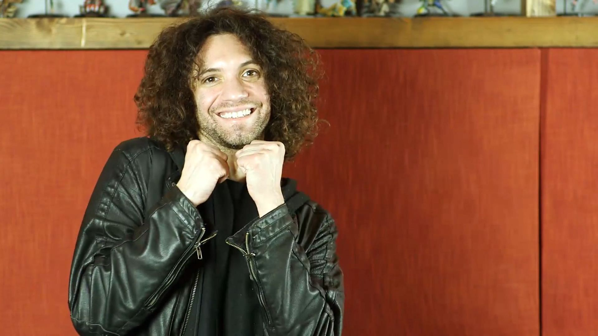
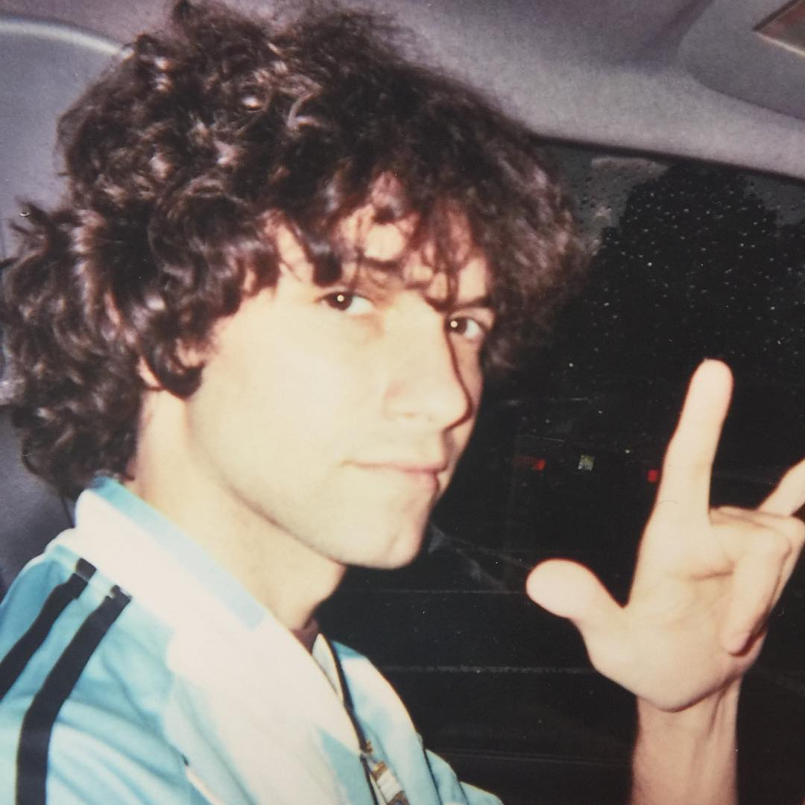
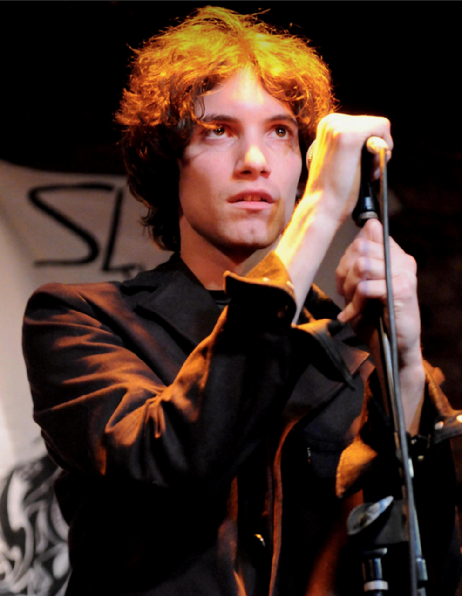
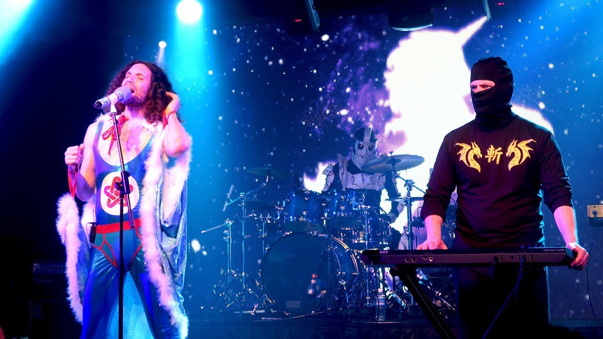

Leigh Daniel Avidan AKA Danny Sexbang

Dan Avidan smiling and the camera
Early Life.
- 1979 - Born in Springfield, New Jersey.
- 1997 - Graduated from Jonathan Dayton High Schoool.
- 2003 - Smoked so muched pot and played so much Morrorwind for so long that he started to confuse people for Morrowwind characters.

Danny at age 24 giving the camera some hand horns.
Early Career
- 2002 - Joined indie rock band Northern Hues as lead singer.
- 2005 - Northern Hues split up due to personality conflicts and creative differneces.
- 2006 - Forming alternative rock duo Skyhill.
- 2008 - Skyhill seperating due to loss of passion.
- 2013 - Joined Game Grumps.
- 2015 - Skyhill returns by releasing a new single "Firefly".
- 2020 - Skyhill Releases new single "Howling at the Moon".

Danny performing for Skyhill in 2008
Ninja Sex Party
- 2009 - Is introdueced to Brian Wecht and forms Ninja Sex Party.
- 2010 - Performs at various film festivals.
- 2011 - Releases first album "NSFW".
- 2013 - Releases Second album "Strawberries and Cream".
- 2015 - Releases third album "Attitude City".
- 2016 - Releases first cover album "Under the Covers".
- 2017 - Releases second cover album "Under the Cover vol.2".
- 2018 - Releases fourth original album "Cool Patrol".
- 2019 - Celebrates 10 year anniversiary and releases third cover album "Under the Covers vol.3"
- 2020 - Releases fifth original album "The Prophecy"

Danny Sexbang and Ninja Brian performing in Honolulu in 2019